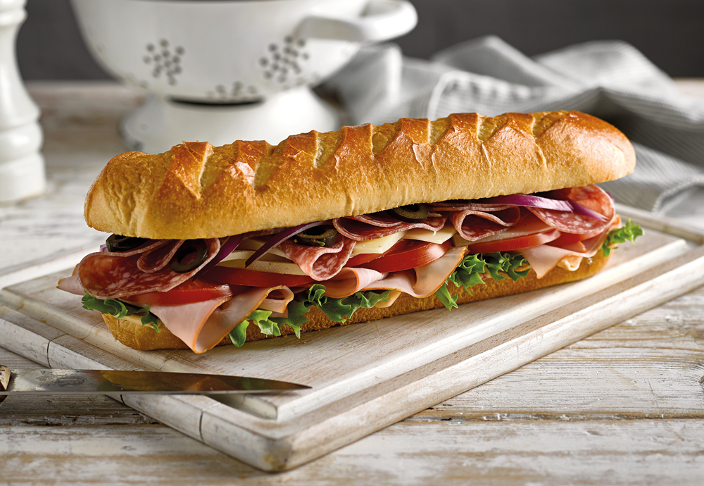

Home
My Perfect Sub

My Perfect Sub
My perfect sub is certainly only a matter of opinion. My go to meats might be different than yours as well as toppings and condiments.
But, lets face it, subs are a staple lunch item and deserve to be shared. Maybe you won't like my perfect sub, or maybe we find some commonalities in the items we choose.
Ingredients:
- Bread: I prefer either white or wheat
- Meats: Turkey and Roast Beef
- Veggies: lettuce and tomatoes
- condiments: Mayo and Spicy Brown Mustard
How to Make My Perfect Sub:
This guide is based off a cold cutt sub, though toasting the bread never hurts.
- Spread Mayo and Mustard on the bread
- I prefer to stack my meats on the thinner part of the the bread next
- Lastly, place the thinly sliced tomatoes on top of the meat, followed by the shredded lettuce
- Time to enjoy this simple and perfect meal! Don't forget the chips!